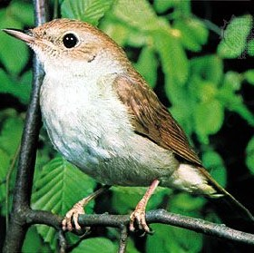
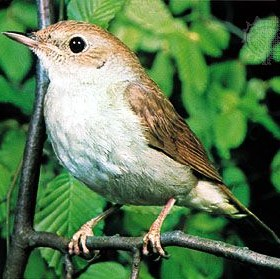
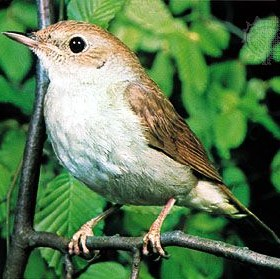

while the browser page reduce the size slowly the bird names break first because reducing browser window size based on Bootstrap grid css from min width of 768px col-md-2 is taking classes are applying that is the width of 16.6 % but when screen size is reduced to below 786px so we have not defined any css classes for that particular div so it's taking parent div css that is width of 100% for each and every div

| # | Letter | Bird | Lake | Athlete |
|---|---|---|---|---|
| 1 | B | black swift | Balaton | Bhuvi |
| 2 | O | Olive pigeon | Ohrid | O'bryan |
| 3 | N | Nightingale | Nile | Nikhil |
| 4 | T | Turkey | Tungabadhra | Taylor |
| 5 | H | Hill Pigeon | Harveys | Haydin |
| 6 | U | Unicoloured Blackbird | Upemba | Usman |

The African hawk-eagle (Aquila spilogaster) is a large bird of prey. Like all eagles, it belongs to the family Accipitridae. This species’ feathered legs mark it as a member of the Aquilinae subfamily.[2] The African hawk-eagle breeds in tropical Sub-Saharan Africa. It is a bird of assorted woodland, including both savanna and hilly areas but the tend to occur in woodland that is typically dry. The species tends to be rare in areas where their preferred habitat type is absent.[3] This species builds a stick nest of around 1 m (3.3 ft) across in a large tree. The clutch is generally one or two eggs. The African hawk-eagle is powerfully built and hunts small to medium sized mammals and birds predominantly, occasionally taking reptiles and other prey as well.[4] The call is a shrill kluu-kluu-kluu.[5] The African hawk-eagle is considered a fairly stable species and a species of Least Concern per the IUCN.[1]
Read more
The turkey is a large bird in the genus Meleagris, native to North America. There are two extant turkey species: the wild turkey (Meleagris gallopavo) of eastern and central North America and the ocellated turkey (Meleagris ocellata) of the Yucatán Peninsula in Mexico. Males of both turkey species have a distinctive fleshy wattle, called a snood, that hangs from the top of the beak. They are among the largest birds in their ranges. As with many large ground-feeding birds (order Galliformes), the male is bigger and much more colorful than the female.
Read more
Vampire bats, species of the subfamily Desmodontinae, are leaf-nosed bats found in Central and South America. Their food source is blood, a dietary trait called hematophagy. Three extant bat species feed solely on blood: the common vampire bat (Desmodus rotundus), the hairy-legged vampire bat (Diphylla ecaudata), and the white-winged vampire bat (Diaemus youngi). All three species are native to the Americas, ranging from Mexico to Brazil, Chile, Uruguay and Argentina.
Read more